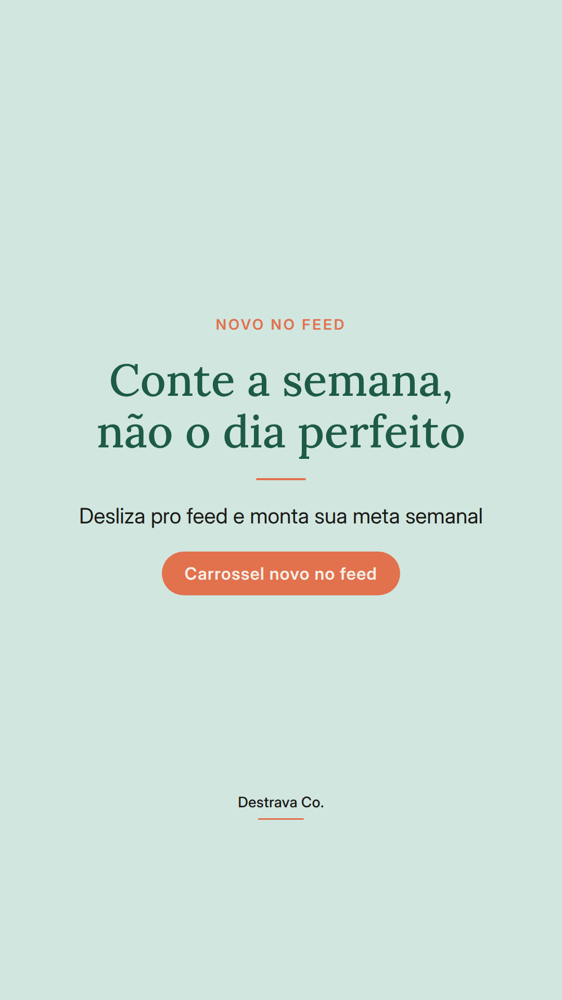
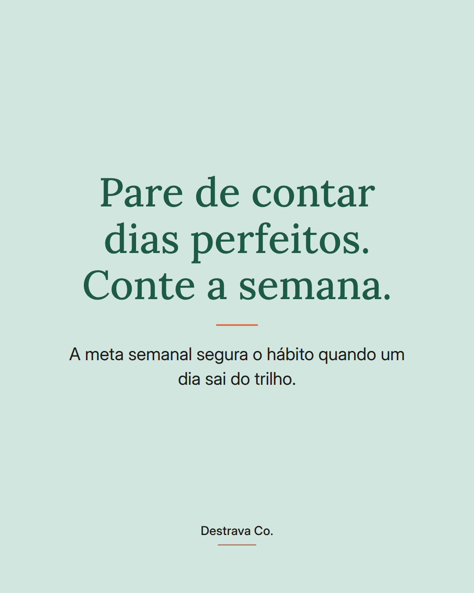
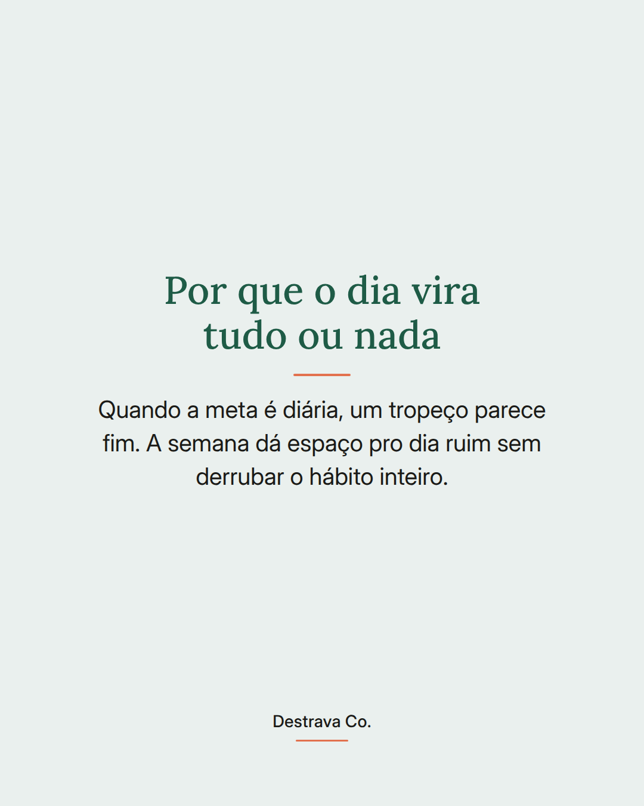
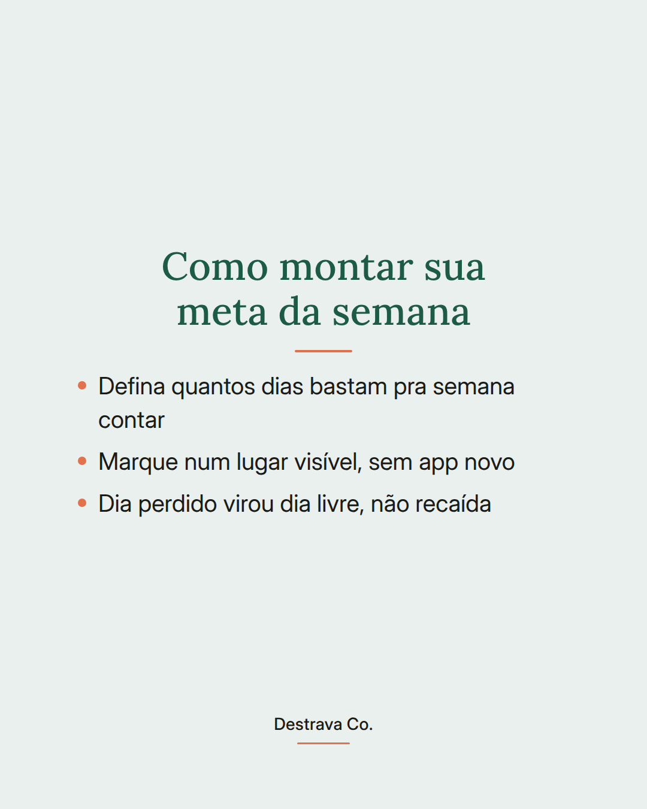
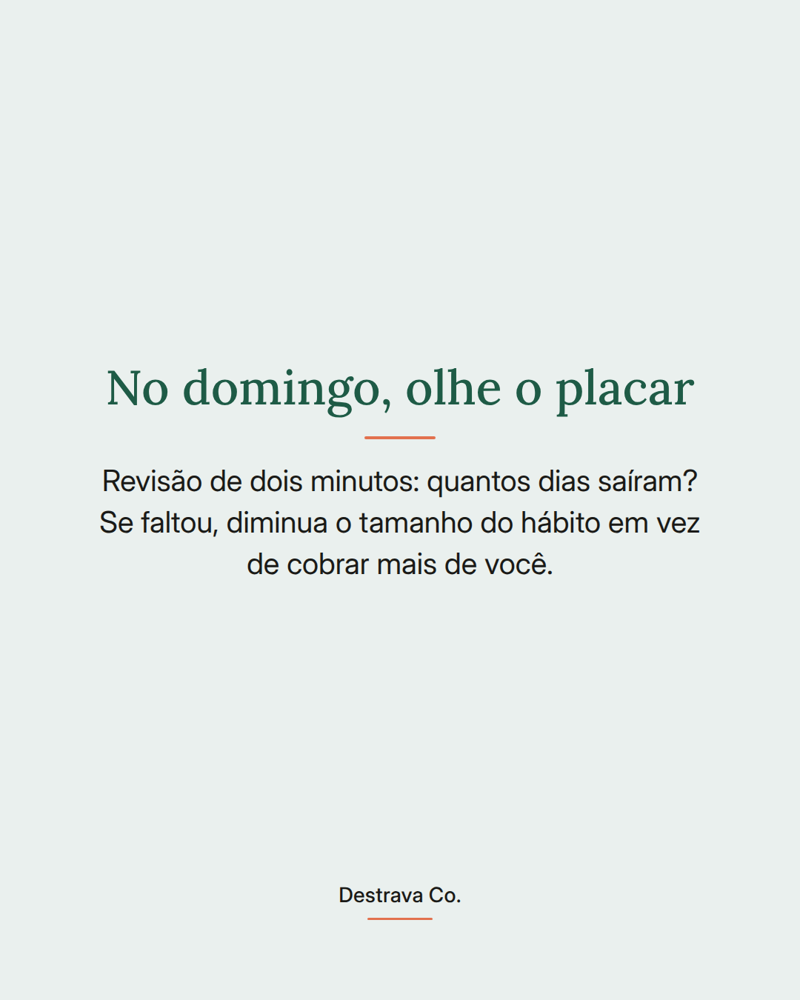

Constância não é ter sete dias perfeitos: é fechar a semana com mais acertos que tropeços.
Quando a meta é diária, qualquer imprevisto parece fracasso e o hábito morre na quarta-feira. Quando a meta é semanal, o dia ruim entra na conta e você continua.
Escolha quantos dias bastam pra semana valer, marque num lugar que você vê sem esforço e trate o dia perdido como dia livre. No fim da semana, olhe o placar em dois minutos e ajuste o tamanho do hábito, não o tamanho da cobrança.
Retomar no dia seguinte vale mais que começar de novo do zero na segunda.
Salva pra lembrar na próxima semana corrida e manda pra amiga que desistiu por causa de um dia. Se quiser o caminho passo a passo, o Destrava 21 te mostra por onde começar.